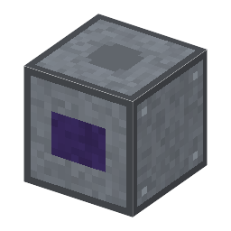

説明
①子ども 交流を直流に変える。後ろ＝交流の入力、前＝直流の出力。交流の網で電解槽を動かすのに要る。
②学生 ガラスの球の底に水銀（陰極）、黒鉛の陽極。電流は熱い水銀の点から陽極の向きにしか流れないので、交流が一方向になる。効率 約95%。
③大人 1902年、クーパー・ヒューイットが水銀整流器を作った。電力用の静かな（回らない）整流器の最初（フレミングの真空の二極管は1904年）。⚠️ 真空に封じる工程は省略。
④ガチ 大きな水銀整流器は1970年代まで電車やアルミの工場を動かし、そのあとシリコンのダイオードとサイリスタに代わった。球は青紫に光る。